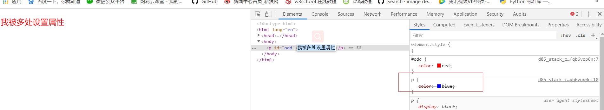
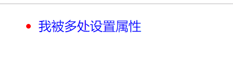
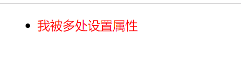
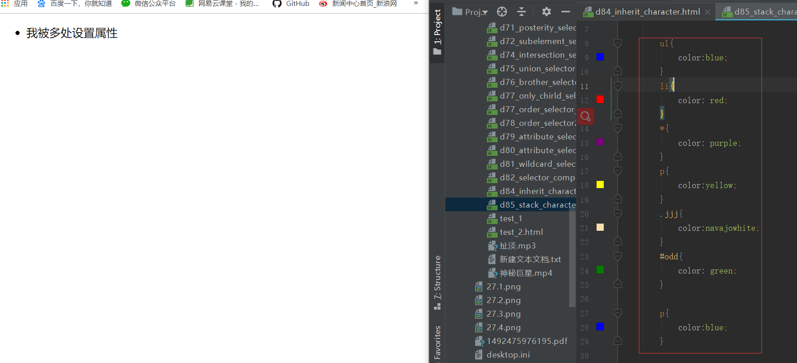

原文连接:https://www.cnblogs.com/ruigege0000/p/11273637.html
一、层叠性
1.定义：CSS处理冲突的一种能力
2.注意点：层叠性只有在多个选择器中“同一标签”，然后又设置了“相同的属性”，才会发生层叠性
3.CSS缩写：Cascading StyleSheet
#odd{color: red;}
p{color:blue;}
..........省略代码.........
<body>
<p id="odd">我被多处设置属性</p>

解释：如上代码我们对p标签以及odd类进行了属性的设置，但只遵循了一种属性设置，因此可以看出CSS具有解决这种层叠性冲突的功能。开发者工具中也指出了p标签的属性设置不生效。
二、优先级
1.作用：当多个选择器选中同一个标签，并且给同一个标签设置相同的属性时，如何层叠就由优先级来确定
2.优先级的判断的三种方式
（1）是否被直接选中（间接地选中就是“继承”），如果是间接选中那么遵循就近原则。
例子一：遵循直接被选中的情形
li{color: red;}
p{color:blue;}
..........省略代码.........
<ul>
<li>
<p id="odd">我被多处设置属性</p>
</li>
</ul>

例子二：间接选中遵循就近原则
ul{color:blue;}
li{color: red;}
..........省略代码.........
<ul>
<li>
<p id="odd">我被多处设置属性</p>
</li>
</ul>
（2）是否是相同的选择器，遵循后设置原则，谁在后面设置的就遵循谁的
例子：红的在后面就是红的
p{color:blue;}
p{color:red;}
..........省略代码.........
<ul>
<li>
<p id="odd">我被多处设置属性</p>
</li>
</ul>
（3）不同选择器
如果都是直接被选中，并且不是相同的选择器，那么就会按照选择器的优先级来层叠
按优先级为：id>类>标签>通配符>继承>浏览器默认
例子：我们按照上面逆序分别验证了，结果在意料之中正确
ul{color:blue;}
li{color: red;}
*{color: purple;}
p{color:yellow;}
.jjj{color:navajowhite;}
#odd{color: green;}
..........省略代码.........
<ul>
<li>
<p id="odd" class="jjj">我被多处设置属性</p>
</li>
</ul>
三、什么是important?
（1）作用：用于提升某个直接选中标签的选择器中的某个属性的优先级的，可以将被指定的属性的优先级提升为最高
（2）格式：
选择器｛属性：值 ！iimportant;}
（3）注意点：
i.important只能用于直接选中，不支持间接选中
#odd{color: red;}
.jjj color:blue !important;}
..........省略代码.........
<p id="odd" class="jjj">
我是用来让id选择器失效的，让class选择器优先级更高
</p>ii.通配符选择器中标签也属于直接选中
#odd{color: red;}
*{color: yellow !important;}
..........省略代码.........
<p id="odd" class="jjj">
我是用来让id选择器失效的，让class选择器优先级更高
</p>
iii.！important只会提升你指定的那个属性优先级
四、源码：
d87_usage_of_!important.htm
ld87_usage_of_!important.html
地址:
https://github.com/ruigege66/HTML_learning/tree/master
2.CSDN：https://blog.csdn.net/weixin_44630050（心悦君兮君不知-睿）3.博客园：https://www.cnblogs.com/ruigege0000/
4.欢迎关注微信公众号：傅里叶变换，后台回复“礼包”获取Java大数据学习视频礼包